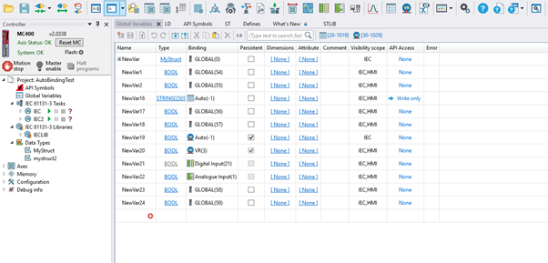
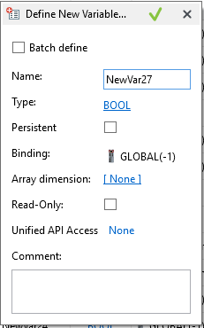
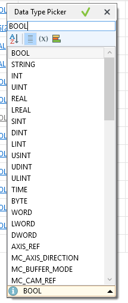
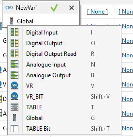

The Global Variable editor tool is used to define global variables in Motion Perfect. These variables can be used across both IEC and HMI tools within Motion Perfect.
To open this tool, ensure that there is at least one IEC program or HMI design in the project, then double-click on Global Variables item in the controller tree.

The tool normally displays all currently defined variables along with their properties. It also includes to export and import variables.
To add new variables, click on first button
 in the tool bar. This will
open a dialog where you can enter the variable properties.
in the tool bar. This will
open a dialog where you can enter the variable properties.

Name: Defines the variable name
Type: Defines the variable type. Click on the URL to view a list of available build-in types and user-defined types. For more information about user-defined types, please visit Data Type help page.

Persistent: Defines whether the variable is persistent. For more information, please visit Auto Bindings help page.
Binding: Defines the variable’s binding. By default, variable is created with Global binding which is only visible to IEC content. A Binding index will be assigned once any IEC task is compiled.

To change the binding, simply click on the text and context menu will appear.
Array dimension: Defines the array dimensions of the variable. To change the dimensions, click on the URL.

Read-Only/Attribute: Defines the variable as constant
API Access: Defines the variable API Access. For more information, please visit Auto Bindings help page.
Comment: Defines the variable comment.
To enter in text mode, click on button in the tool bar.